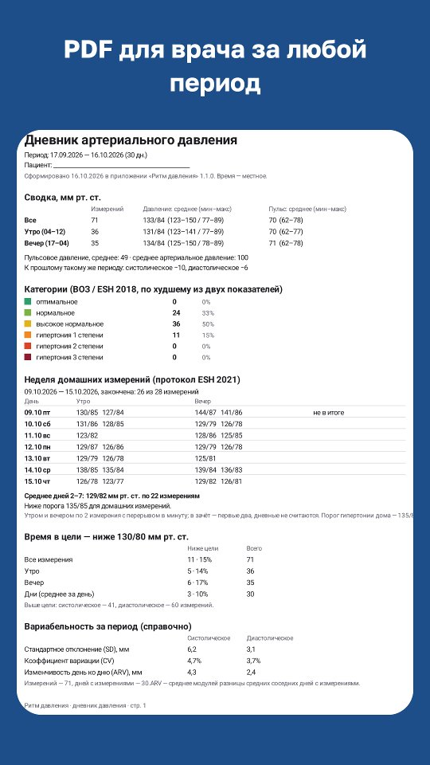
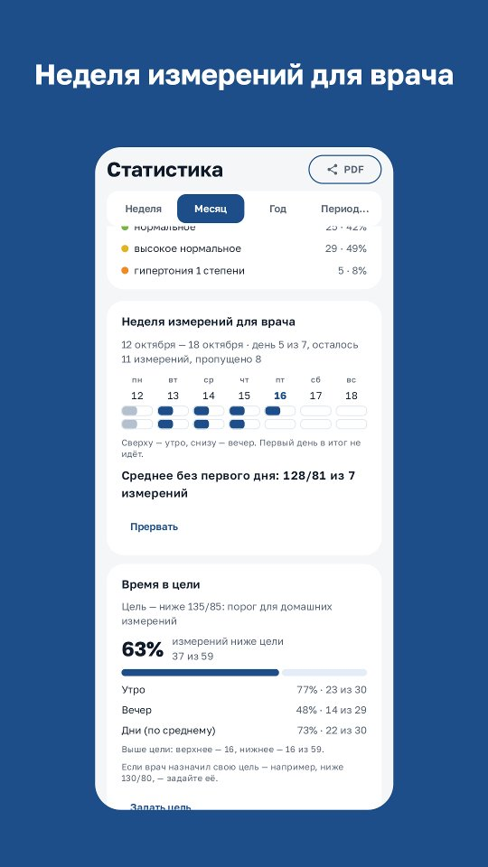

Ритм давления · Инструкции
Дневник давления для врача
Врач попросил вести дневник давления? Вместо тетради — PDF за нужный период: его можно распечатать, отправить в мессенджере или показать с телефона на приёме.
Как сделать PDF
- Откройте «Статистика» и выберите период: неделя, месяц, год или свой.
- Нажмите «PDF для врача» и выберите, куда отправить: почта, мессенджер, печать.
Что в отчёте
- На первой странице — график давления и крупные средние утром и вечером.
- Сводка: среднее, минимум и максимум, пульс, сравнение с прошлым таким же периодом.
- Доли категорий давления по ВОЗ — что они значат.
- Все измерения по дням — с заметками и метками («лекарство», «кофе», «стресс»).

Неделя домашних измерений
Часто врач просит неделю измерений по правилам: утром и вечером по два раза, первый день не считается. Приложение ведёт такую неделю: показывает, что осталось измерить, и считает среднее по протоколу домашнего мониторинга. Это часть подписки «Плюс» (первый месяц бесплатно) — как и время в целевом давлении и вариабельность в отчёте.

Чтобы цифрам можно было верить
Отчёт полезен, если давление измерено правильно — как это сделать дома. А чтобы врач видел давление без бумаги — передайте его в ЕМИАС.
Ритм давления · Условия подписки · Приложение — дневник, а не медицинское изделие: оно не ставит диагноз и не назначает лечение.